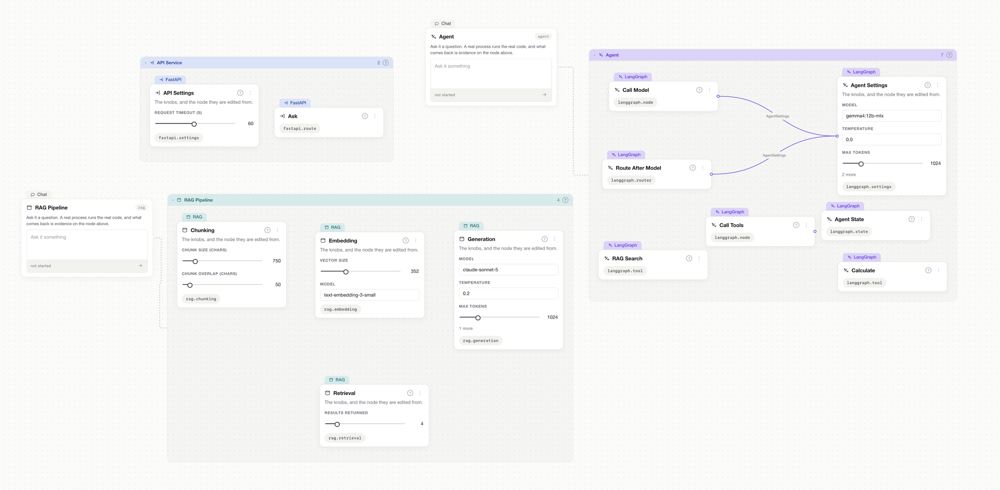

Step 1
Start from real Python
Describe your app in plain Python — or let the built-in AI write it for you. It's just your code, with nothing exotic to learn.
Framestack AI Builder
Most visual builders show a step as green the moment you add it. Framestack only lights a step up once your app has really run through it and worked — proof it works, not just that it exists.

The problem
You wire up a flow, every box lights up, and you still can't tell if it actually runs. Then you export it and get tangled code nobody wants to own. The picture and the real app drift apart — and you're the one who finds out in production.
How it works
Step 1
Describe your app in plain Python — or let the built-in AI write it for you. It's just your code, with nothing exotic to learn.
Step 2
Framestack reads your code and lays it out as a graph for you. There's no extra file to keep in sync — your code is the project.
Step 3
Drag things on the canvas and your code updates. Edit the code and the canvas follows. The two never drift apart.
Step 4
Run your app and Framestack lights up every part that did its job. What you see is proof — not decoration.
from framestack import bp
@bp.route("POST /chat")
def chat(msg: str) -> str:
# retriever → agent → mcp:search
...
The graph is a two-way projection: edit either side and the other follows.
Proof, not guesswork
This is the heart of Framestack. A part of your app is only marked proven once it has really run and done its job. If something can't be checked, it stays unmarked — so you never get a signal that lies.
Proven — green
Your app ran through this part and it worked. That's the only way it counts as proven.
Not proven yet
Nothing has run through this part yet. It isn't broken — it just hasn't proven itself, so it makes no promises.
Couldn't check
Something got in the way of checking this part, so it stays grey. “Couldn't check” never becomes “looks good.”
So when you hand your project to a teammate or push it live, "done" isn't a hope — it's the parts you've watched work with your own eyes.
What you can build
Everything in the registry compiles to real, runnable Python. Support covers what is listed here — nothing is faked in.
How it compares
A Langflow, Flowise, n8n or Dify alternative for developers — with one big difference in what you actually end up owning.
| Other visual builders | Framestack | |
|---|---|---|
| What your project is | A diagram in the tool's own format. | Your real Python code. |
| Adding a step | Drops another box on the diagram. | Adds real code you can read and run. |
| What “done” means | You added the box. | Your app ran through it and it worked. |
| If you stop using it | It stops working without the tool. | Your project keeps running on its own. |
| Lock-in | You're tied to their platform. | None — it's just a Python project. |
No lock-in
What you build is a normal Python project — not something trapped inside our tool. Ship it to your own servers, hand it to your team, or stop using Framestack entirely. It keeps running without us.
# it's just Python $ python -m app # runs on its own — no Framestack needed
Honest caveats
It's early
Framestack is version 0.1.0 and open source. It's well-tested (578 tests), but still young — expect a few rough edges.
Does what's in the box
It supports the building blocks in its library — agents, RAG, APIs, tools and more. It's not “every framework under the sun.”
A desktop app you build
It's a desktop app you build from source (you'll need Rust), and the Mac builds are made on macOS.
The AI helper
The built-in AI that writes code for you needs Claude Code installed on your machine.
Open source
Framestack AI Builder is MIT-licensed. Read the source, run it locally, open an issue, send a pull request. No account, no cloud, no pricing page.
FAQ
Framestack AI Builder is an open-source, self-hosted visual AI agent builder for Python. You draw agents, RAG pipelines, FastAPI services and MCP servers as a node graph that is a two-way projection of real code — edit either side and the other follows. It is MIT-licensed and runs as a desktop app.
Unlike Langflow, Flowise or n8n, Framestack keeps your code as the single source of truth instead of a JSON flow document. There is no manifest and no graph file; the graph is read from your Python. A step is only marked proven once your own tests run through it and pass.
No. What you build is an ordinary Python project you can deploy anywhere. One command removes Framestack from it completely, leaving code that behaves exactly the same. Delete Framestack and your project keeps running — there's no vendor lock-in and nothing to migrate off.
It means that part of your app has really run and worked — your own tests went through it and passed. If something can't be checked, it stays grey instead, so “couldn't check” never turns into “looks good.”
Yes. Framestack reads your existing Python and lays it out as a graph, so you can point it at a project you already have. Edits you make on the canvas are written straight back into your code, touching only what you changed. You can keep editing by hand in any editor too.
Framestack supports eight node families: FastAPI services and routing, LangGraph agents and state, RAG pipelines (chunking, embedding, retrieval, generation), MCP servers and clients, Celery queues and background tasks, Docker and Compose, databases, and vector stores — 27 node kinds in total. Support covers what is in the registry.
Yes. Framestack is free and open source under the MIT license. It is currently version 0.1.0, with 578 tests and a single gate that CI runs. Building from source needs a Rust toolchain, and the .app and .dmg are built on macOS. It is a desktop application.
No account is required — Framestack has no cloud, no sign-in and no hosting, and runs locally as a desktop app. For the AI-agent half that writes code to your project's rules, you need Claude Code installed on your machine.
Your code lives locally, in your own repository. Framestack has no manifest and no graph file — the Python in your project is the source of truth. Nothing is uploaded to a cloud, and the built application deploys as a normal Python project on infrastructure you control.
Yes. It's ordinary Python, so you can edit it by hand in any editor. Framestack writes canvas changes straight back into your code, and it notices if the two ever fall out of step — so your hand edits and canvas edits stay in sync.
Open source. Run it locally in a few minutes.